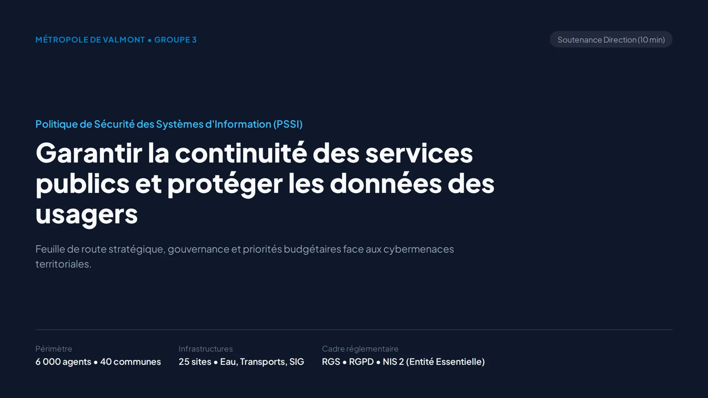

04 · Gouvernance · 2026
PSSI de la Métropole de Valmont
Écrire un document qui engage une collectivité de 6 000 agents, et le défendre en dix minutes devant une direction qui a trois décisions à prendre.
- Cadre
- Projet d'équipe, soutenance direction
- Rôle
- Co-rédaction et soutenance
- Référentiels
- ISO/IEC 27002, NIS 2, RGPD, RGS
- Livrable
- Document cadre et support de soutenance

Contexte
Une métropole fictive de 6 000 agents, 40 communes et 25 sites, avec un système d'information hétérogène qui couvre aussi bien l'état civil que les automates d'eau et de transport. Deux éléments déclenchent l'urgence : une cyberattaque critique chez une commune voisine, et l'application imminente de la directive NIS 2, qui qualifie l'organisation d'entité essentielle.
La difficulté n'est pas technique. C'est de produire un document lisible par une direction qui arbitre sur des risques cotés, pas sur une liste de bonnes pratiques sans hiérarchie.
Ce que j'ai fait
Cinq phases qui s'enchaînent.
- Contexte et valeurs métier. Cinq valeurs qualifiées par leurs besoins de disponibilité, intégrité, confidentialité et preuve, pour éviter de protéger « le SI » en général.
- Registre de risques coté. Produit gravité par vraisemblance, seuil explicite, cible annoncée : ramener tous les risques sous huit.
- Gouvernance. Quatre niveaux avec un rôle écrit, et chaque objectif rattaché à un responsable nommé.
- Matrice de traçabilité. Chaque règle formulée avec son niveau d'exigence, rattachée à un risque, à une mesure du référentiel et à un indicateur mesurable.
- Feuille de route et décisions. Trois horizons, cinq indicateurs trimestriels, trois décisions soumises au vote.
Résultat
Trois règles extraites de la matrice, pour montrer le principe.
| Règle | Exigence | Mesure | Indicateur |
|---|---|---|---|
| ACC-01 | Tout compte à privilèges doit utiliser la double authentification | 5.17 | Comptes couverts, cible 100 % |
| RES-01 | Le réseau d'administration doit être cloisonné des réseaux industriels | 8.22 | Flux non autorisés, cible 0 |
| EXP-02 | Une sauvegarde hors ligne doit être testée chaque trimestre | 8.13 | Restaurations réussies, cible 100 % |
- Périmètre
- 6 000 agents
- Risques cotés
- 5
- Indicateurs suivis
- 5 au trimestre
Limites
- Cas entièrement fictif : périmètre et hypothèses non validés sur le terrain.
- Aucun chiffrage détaillé du budget cyber, évoqué comme décision à voter sans estimation ligne à ligne.
- L'état de maturité initial est supposé, pas mesuré. Une vraie démarche commencerait par un diagnostic.
- Calendrier NIS 2 simplifié, articulation avec l'autorité nationale restée théorique.
Ce que j'en retiens
Une PSSI ne se vend pas à des techniciens, elle se vend à une direction. Ce qui la rend crédible n'est pas la qualité des mesures, mais la chaîne qui va du risque à la règle, de la règle à l'indicateur, et de l'indicateur à un responsable nommé.
Deuxième leçon, très concrète : la différence entre « doit » et « devrait » n'est pas une nuance de style. Une règle impérative engage des sanctions, une recommandation n'engage rien. Écrire « doit » partout produit un document inapplicable, « devrait » partout produit un document décoratif.